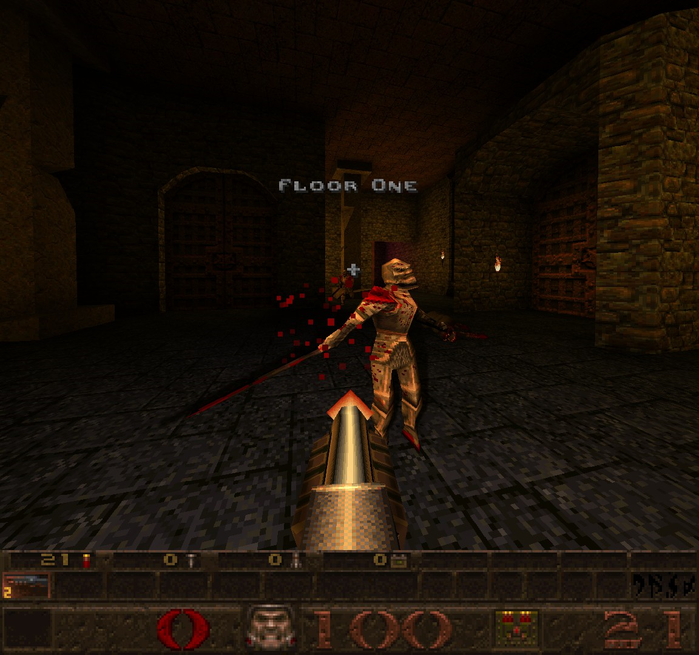
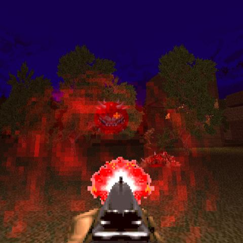

Quake Level: Qarsqe.bsp
This level I designed in Quake was meant to help with understanding better how to design levels in general. Giving me pre-created items and ways to use them.
Programs & Tools used:
- Trenchbroom
- Quake Source Port: FTEQW
I am a Game Design Diploma Student studying at AIE, currently in my first year.
Wanna see a certain bit of my work?
This level I designed in Quake was meant to help with understanding better how to design levels in general. Giving me pre-created items and ways to use them.
Programs & Tools used:
- Trenchbroom
- Quake Source Port: FTEQW

Much like one of my Quake levels, this was a way to help me understand how to design levels, from concept to completion.
Programs & Tools used:
- SLADE WAD Editor
- DOOM Source Port: UZDoom
- Photoshop (Basic Texture Editing)
